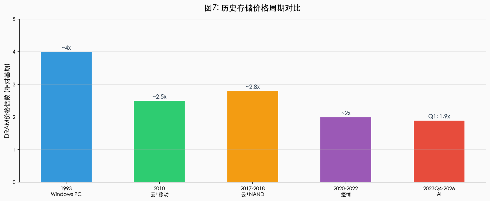

2026 Q2-Q3 峰值预期与 2027 回落
| 周期 | 时间 | 主要驱动 | DRAM涨幅(峰值) | 持续时间 |
|---|---|---|---|---|
| Windows PC | 1993 | 个人电脑普及 | 约 20% | 约 12 个月 |
| 云 + 移动 | 2010 | 智能手机与云计算 | 约 35% | 约 18 个月 |
| 云 + NAND | 2017-2018 | 数据中心与 NAND | 约 50% | 约 24 个月 |
| 疫情周期 | 2020-2022 | 居家经济与供应链 | 约 45% | 约 20 个月 |
| AI 周期 | 2023Q4-2026 | AI 基础设施与训练 | Q1 已涨 90-95% | 预计至 2027 |
价格将在 2026 年下半年见顶，随后因新产能逐步释放和需求自然回落而进入下行通道，但 AI 基础设施的长期投入 将支撑底部高于上一周期。